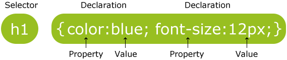
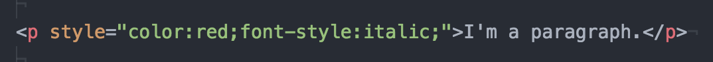
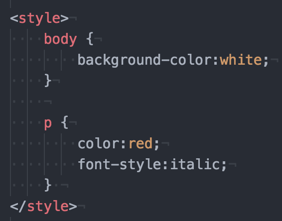
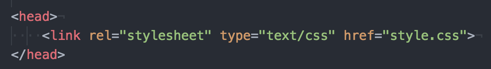
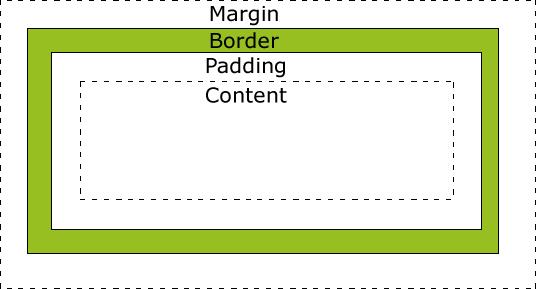

[Home](index.html)
## Structure, Style, Starter Code: Part Two
[<< Previous Lesson](lesson-htmlcss-1.html)&nbsp;&nbsp;|&nbsp;&nbsp;[Next Lesson >>](lesson-htmlcss-3.html)
### CSS: Clearly Stylish? Si.
> "CSS is not a trivial technology to learn, there are literally 100s of
> properties to master and many of the usage of many of these properties is
> not straight forward. To further complicate matters we find that browser
> support for CSS can be quite erratic and the use of vendor prefixed
> properties (ex. -webkit-) is not uncommon, but generally required.
> Presentation is quite important so given the complexity of implementing
> designs using CSS many aspiring Web developers give up and adopt CSS
> frameworks such as Twitter Bootstrap. This is not a surprising outcome as
> developer productivity can be significantly improved using a CSS framework,
> though this gain often comes at the expense of unique design and reduced
> performance."
>
> <span style="color:grey">- Professor Thomas Powell, UCSD</span>
Now that we have a white-and-black form standing before us, it'd probably be in our best interest to clothe and align the poor thing. More than that, we want to make it the belle of the ball - would you rather engage the white t-shirt blue jeans flavor of your content or something wrapped in a Versace gown?
**CSS** or **Cascading Style Sheets** allow you to swathe your humbly structured content in the vestments of your wildest dreams - as long as you know what you're doing. In taking down the analogy a notch, CSS also lets you do all the basic necessities of formatting a webpage: positioning elements, changing font and color, and adding spacing and borders between elements so that they don't cluster or overlap.
It probably goes without saying: if HTML is the skeletal structure of your webpage, CSS is the makeup, the clothing, the *aesthetic* of your site.
<img src="images/Portfolio.png" alt="Cascading" style="height: 25%; width: 25%">
####Concepts
* ["Cascading" - What's that All About?](#cascade)
* [Selectors](#selectors)
* [Applying CSS to your HTML Document](#exinternal)
* [Padding, Borders, and Margins](#pbm)
* [Fontastic Beasts](#fonts)
___
<a name="cascade"></a>
#### "Cascading" - What's that All About?
Recalling *block* and *inline* elements from the previous HTML lesson, recognize that the first rule of CSS is as follows:
> EVERYTHING CASCADES.
>
> All the rules of the highest block cascade until another later rule
> overrides it (ie. when a block element is hit). Then the rules of the body
> or the rules specified for that element apply.
If, for example, I wanted to emphasize the word "CSS" inside the paragraph &lt;p&gt;CSS is not a trivial technology to learn&lt;/p&gt; by changing it to the color red, I would simply do the following:
```
<p> <span style="color:red">CSS</span> is not a trivial technology to learn</p>```
If I wanted to change the rest of the paragraph's text to a more muted color while keeping emphasis on the word "CSS", I could do so as well.
```
<p style="color:grey"> <span style="color:red">CSS</span> is not a trivial technology to learn</p>```
Try it out in practice [here](https://www.w3schools.com/code/tryit.asp?filename=FJOBT12AA066).
Basically, all the style rules applying to the specific paragraph tags apply to everything within them *until* the first block element is hit, which, in this case, is the span tag enveloping "CSS". If no rules were defined for the paragraph tags, all the rules applying to the overarching body tags would apply instead.
___
<a name="selectors"></a>
#### Selectors
CSS cannot exist without pre-existing HTML. All styling can only be applied to content that has already been surrounded with tags.

<br><span style="color:grey">Source: w3schools</span>
There are three *selectors* CSS styling can be applied to:
1. **element**: This is inclusive of all HTML tags such as &lt;h1&gt; and &lt;p&gt;. An example of this is as follows:
```
p {
color: red;
text-align: center;
} ```
2. **id**: This selector uses the id attribute of an HTML element to select a specific element. The id of an element should be the only one of its kind on a page, so any styling applied to this selector can only be applied to one element. To select an element with a specific id, preface the id name with a hash (#) character.
```
#para1 {
text-align: center;
color: red;
}```
3. **class**: This selector selects elements with a specific class attribute. The class of an element can be applied to any number of elements. To select elements with a specified class, preface the id name with a period (.) character.
```
.center {
text-align: center;
color: red;
}```
You can also group any selectors with the same properties like so:
```
p, #para1, .center {
text-align: center;
color: red;
}```
Knowing how and when to use selectors is a great way to save yourself work in CSS, since you can control the layout of multiple webpages and a lot of the code can be reused across multiple sections.
___
<a name="exinternal"></a>
#### Applying CSS to your HTML Document
CSS can be applied to a document in a number of ways, namely as *inline CSS*, through an *internal stylesheet*, or through an *external stylesheet*. The means of application should be a direct factor of **(1)** whether the same styling will be used again and **(2)** whether the applied styling will affect code readability (and by association, writeability).
1. **Inline CSS** is applied directly to a single HTML element.

This method is the most direct application and works out great if you want to style a single element. However, it is not ideal in most cases, as it creates additional clutter in your HTML code and is harder to locate and maintain. The two following methods are often seen as better coding practice.
2. **Internal Stylesheets** can be created within the HTML doc itself by inserting &lt;style&gt; tags.

This method allows you to work in the same file, but can have drawbacks if your file gets lengthy and readability is affected. Internal Stylesheets are often placed within the &lt;head&gt; tags of the file (the brain of the page!).
3. **External Stylesheets** are separate CSS files (.css) that can be linked to within the &lt;head&gt; of an HTML document.

This file cannot contain any HTML code, and can be commented upon using the "/\*" and "\*/" opening and closing tags.
```/* This is a CSS comment */```
This is often the most preferred means of applying CSS to a file, since separate types of code are modularized and a single CSS file can be applied to multiple HTML pages through simple linking.
___
<a name="pbm"></a>
#### Padding, Borders, and Margins

<br><span style="color:grey">Source: monc.se</span>
___
<a name="fonts"></a>
#### Fontastic Beasts
It's nearly impossible to know every feasible CSS attribute and attribute value out there, but here's [a good reference that encompasses everything you need](https://www.onblastblog.com/css3-cheat-sheet/).
[<< Previous Lesson](lesson-htmlcss-1.html)&nbsp;&nbsp;|&nbsp;&nbsp;[Next Lesson >>](lesson-htmlcss-3.html)